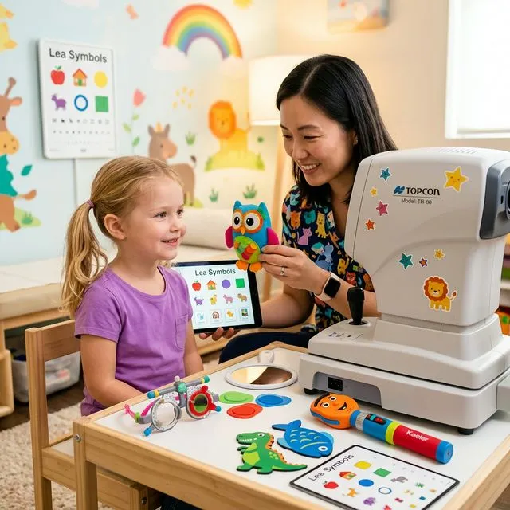
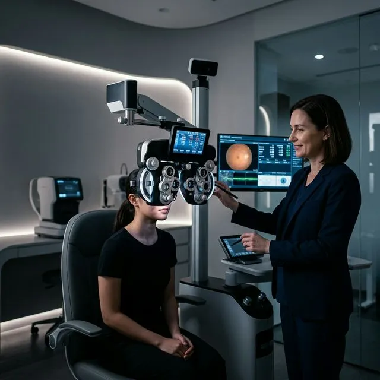
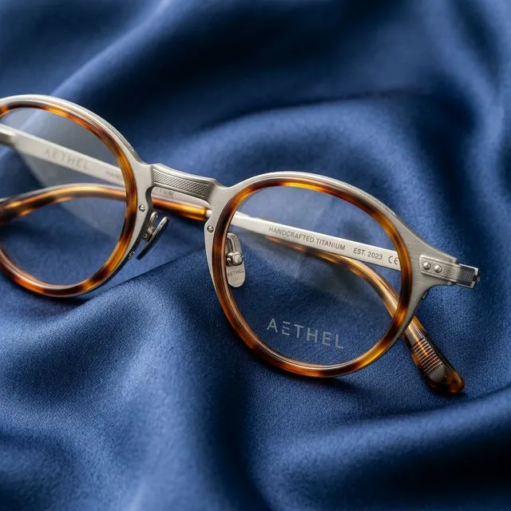

Your Eyes on Screen Time
Practical ways to manage digital eye strain in a screen-focused lifestyle.
Discover trusted eye-care information covering everyday vision, preventive care, modern treatments, and healthy visual habits.
Eye care continues to evolve through improved diagnostic methods, smarter clinical processes, and a stronger focus on individualized patient experiences.
Explore carefully curated articles across the topics that shape everyday eye health.
Understand common eye conditions, warning signs, and preventive habits.
Learn more about prescriptions, examinations, and maintaining healthy vision.
Explore modern approaches to cataract, retina, glaucoma, and vision correction care.
Helpful guidance for protecting developing vision and identifying childhood concerns.
Simple choices can make a meaningful part of your daily eye-care routine.

Practical ways to manage digital eye strain in a screen-focused lifestyle.

Understanding the value of routine vision and eye-health assessments.

Everyday practices that can support comfortable and responsible eye care.
Our expert articles translate clinical topics into practical information, helping readers make sense of eye health without unnecessary complexity.
Meet Our Specialists"Empowering patients with clear visual knowledge reduces anxiety and leads to far better post-consultation outcomes."
Knowledge creates confidence. Explore treatment-focused articles that explain what to expect before, during, and after care.
Learn about common cataract-related changes and when an evaluation may be appropriate.
A closer look at ongoing eye-health monitoring, pressure checks, and field awareness.
What patients should understand before exploring custom laser vision-correction options.
From digital imaging to advanced diagnostic systems, explore the role technology can play in delivering more informed eye care.
Explore Eye Care TechnologySupporting children’s visual development begins with awareness, observation, and timely professional care.
Recognizing squinting, head tilting, or reading distance shifts.
How environmental and genetic factors drive early nearsightedness.
Managing indoor screen hours and encouraging natural outdoor play.
Key developmental milestones for infancy, preschool, and school years.
Eye wellness is closely connected to the way we live, work, rest, and interact with the world around us.
Managing glare, contrast, and distance at digital workstations.
How restful nocturnal REM sleep lubricates and rehydrates the cornea.
Omega-3s, lutein, and Vitamin A rich dietary habits.
Protective eyewear and atmospheric moisture considerations.
UV400 sunglasses protection against solar radiation.
The 20-20-20 rule for reducing ciliary muscle tension.
Not everything you hear about vision and eye health is accurate. Explore simple explanations for common eye-care questions.
Glasses correct refractive errors; they do not make the eyes dependent on them or physically alter ocular anatomy.
Some eye conditions (like early glaucoma) can develop without obvious visual changes, making routine scans essential.
Vision concerns can occur at different stages of life, including pediatric myopia and computer vision syndrome in young adults.
Short, useful articles created for busy lives.
Receive occasional eye-care insights, educational articles, and clinic updates delivered to your inbox.
Educational content only. Your privacy matters to us.
Explore our latest insights or speak with our eye-care team for guidance tailored to your needs.
"Read with curiosity. Care with confidence. See with clarity."